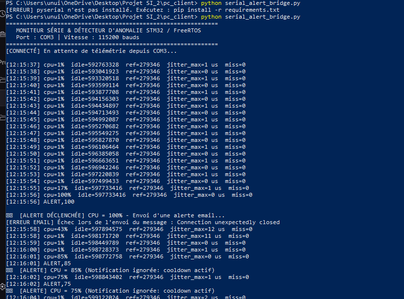
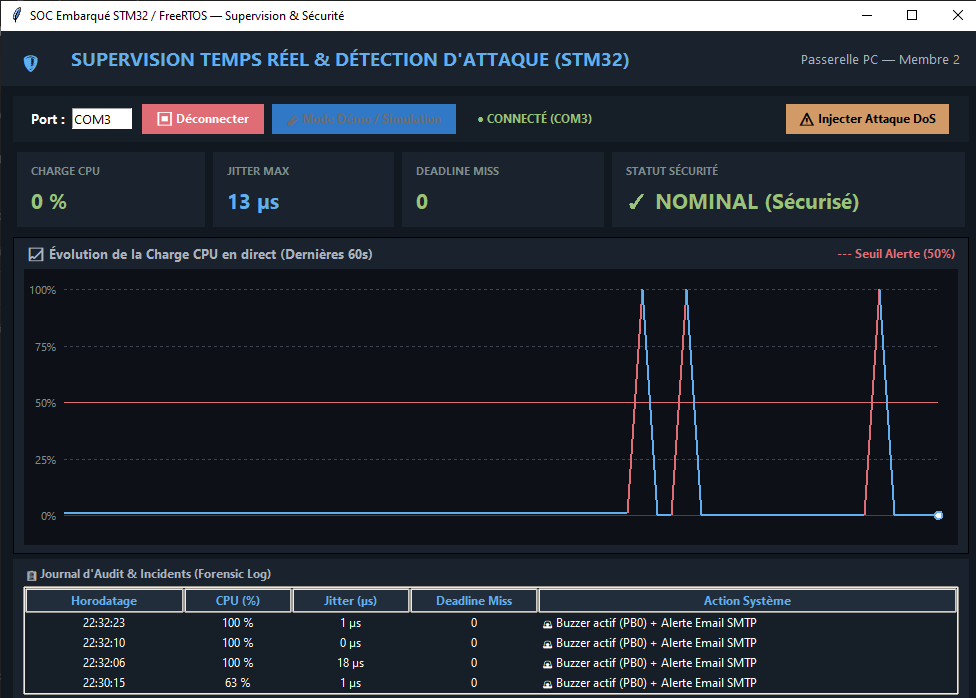
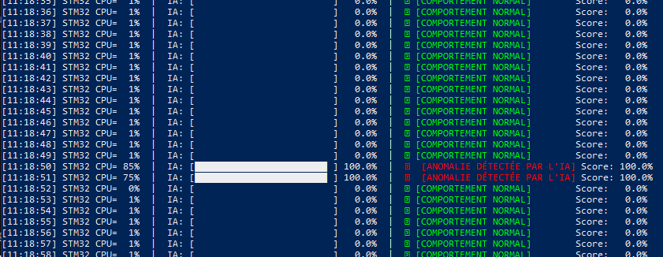

NUCLEO-F401RE @ 84 MHz
Station de Supervision Python
Réseau de Neurones Quantifié
🔁 Flux continu : STM32 (COM3) ➔ Trames UART ➔ Détection SOC ➔ Alerte Email & Inférence IA ➔ Clôture d'incident
DWT->CYCCNT (Data Watchpoint and Trace) incrémenté à chaque cycle d'horloge (84 MHz = 11,9 ns par tick).jitter_cycles = abs(cycles_actuels - cycles_attendus); jitter_us = jitter_cycles / 84;

cpu=1% jitter=1us miss=0. Le processeur est au repos, la boucle Idle Hook incrémente le compteur.cpu=100%.ALERT,100 en moins de 10 ms et déclenchement du buzzer d'alarme sur PB0.miss=0. Aucun retard critique !
COM3 OU mode simulation autonome pour démonstration de secours.nouzhahssina@gmail.com lors des tests.ALERT,100 peuvent saturer la messagerie.Une attaque intelligente peut limiter son CPU à 20% pour ne pas franchir le seuil des 50%. L'IA analyse 15 caractéristiques simultanées :
close, execve, ioctl, mmap, open, read, write.model_data.h et scaler_params.h directement compilables avec STM32CubeIDE.
CPU=1%. L'IA prédit un score d'anomalie de 0,0% et affiche [COMPORTEMENT NORMAL].| Métrique de Performance | Régime Nominal | Sous Attaque DoS | Objectif du Projet | Validation |
|---|---|---|---|---|
| Charge CPU (STM32) | 1 % | 85 à 100 % | Simulation DoS | ✅ Validé |
| Jitter Tâche Critique | 0 à 1 µs | 12 à 18 µs | < 500 µs | ✅ Déterminisme Préservé |
| Deadline Misses | 0 | 0 (Zéro) | Strictement 0 | ✅ Isolation Totale |
| Alarme Matérielle (Buzzer) | Inactif | Actif (2 kHz sur PB0) | Alerte locale < 1s | ✅ Validé |
| Supervision SOC & E-mail | Nominal | Courbe 100% + Mail TLS | Alerte distante | ✅ Délivré à nouzhahssina@gmail.com |
| Score Détection TinyML | 0,0 % (Normal) | 100,0 % (Anomalie) | Détection IA | ✅ 97,9% Précision / 3,32 Ko |
Ce projet démontre avec succès la faisabilité d'une architecture de sécurité multicouche Security by Design pour l'Internet des Objets critique : le respect strict des échéances temps réel est garanti, tout en offrant une supervision réactive et une perspective d'intelligence distribuée ultra-légère.